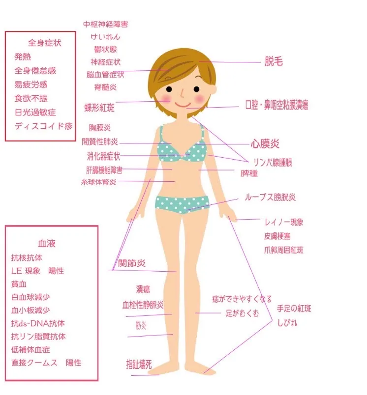

SLEの症状
SLEの症状は人それぞれ異なります。発熱、関節の痛み、皮膚症状など、よくあるサインを整理してご紹介します。ご自身の症状を理解し、医師に伝える参考にしてください。
全身の症状
・だるい、疲れやすい
体の全体的な疲れや倦怠感を感じることがあります。
・発熱
微熱〜38℃以上の高熱になることも少なくありません。
・リンパ節の腫れ
多くの場合、腫れは柔らかく、痛みはありません。
・感染症
免疫力が低下します。
・体重が減る・増える・むくみ
皮膚や粘膜の症状
・ループスエリテマトーデス
蝶形紅班や円板状皮疹が狼がかんだ傷を想像させることから由来します。
頬部紅斑（蝶形紅斑）
ほお骨から鼻に広がる両翼を広げた蝶の形に似た紅斑で、蝶形紅斑と呼ばれる。
・円板状皮疹（discoid lupus）ディスコイド疹
慢性の鱗屑を伴う円板状皮疹は次第に周囲が肥厚し中央が陥没様になっていく。
・日光過敏
紫外線に当たっていた肌に発赤や水泡形成などの反応がでる。日光過敏症は特に皮膚の色が薄い人にみられます。
・口腔内潰瘍
痛みのない口腔内潰瘍で、典型的な場所は硬口蓋。特に口の中の天井部分、頬の内側、歯ぐき、鼻の内部にできるお医師さんの口腔内診察で初めて気づかれることがある。
・環状紅斑
環状の紅斑局面である環状紅斑。
・凍瘡様皮疹
手の指先に凍瘡のような見た目をすることがある。 爪の周りに紅斑があることもある。
・レイノー症状
寒冷刺激によって手指の色が白色化・青紫色化するレイノー症状。血流が悪くなり青白くなる→紫→赤→数分〜10分程度で元に戻る
・リベドー疹
手足に淡褐色の網目状皮疹。SLEの特徴的ではないが、発見された場合は血管炎もしくは腎炎を疑う。
・脱毛
頭皮に紅斑が形成され局所的な脱毛もしくは皮疹を伴わずびまん性の脱毛を伴うことがある。 再燃の際に全身、局所の脱毛がよく見られる。
・深在性ループス
皮下脂肪組織に炎症が発生し、脂肪組織が自壊、瘢痕形成に至る。脂肪組織が豊富な顔面頬部や臀部などに好発し、外観上は陥凹した局面を形成する。触診上、内部の瘢痕を硬結として触れる。治癒後も皮膚陥凹が残りやすく治療は急がれる。
・皮膚症状の治療
日本ではエリテマト>ーデスの皮膚疾患はステロイドや効果は落ちるが副作用が少ないことから、プロトピック軟膏が使われている。世界ではプラケニルが皮膚疾患に効き用いられている半数以上のプラケニル服用者が皮膚疾患が改善されている効果は4〜8週程度と言われているが、それ以上かかることもある
筋肉や関節の症状
・筋肉痛
血液検査でCPK・CKという項目が上昇する。CPK・CKの軽度の上昇は、普通の運動などでもおこりますので、あまり神経質になる必要はありません。
・関節の痛み・腫れ
複数の関節に症状があらわれることが多いです。関節の炎症は一般に間欠的で、通常は関節に損傷が起こることはありません。 痛みはあちこちにある
・こわばり
手が握りにくい、手に力が入りにくいといった症状のことを言います。 朝起きた時によく起こりますが、朝に限らず、長時間じっとしていたり、昼寝をしたりした後に起こることもあります。
腎臓の症状
・ループス腎炎
腎臓の濾過がうまくできなくなり炎症が起きる。 わたしたちの３人に1人が腎臓に重篤な炎症が起き、腎障害が起こることもある。 自覚症状がわかりにくく、顔や足のむくみ、全身倦怠感、食欲不振、高血圧も要注意
ループス腎炎になると、タンパク尿、血尿、ネフローゼ症候群などさまざまな症状がみられることがあります。
＊尿が泡立つ（タンパク尿）
＊尿が赤茶色になる（血尿）
＊足の浮腫（腎障害により尿が作れなくなる、ネフローゼ症候群などが原因）
肺や心臓の症状
・心臓の炎症
無症状のことも多いですが、脈が速い、息苦しいなどの症状があらわれることがあります。
・胸膜炎
肺を覆う胸膜に炎症が生じ、胸の痛みや呼吸困難などの症状があらわれます。呼吸・体動時にこれらの症状が強くなるのが特徴です。
・漿膜炎
漿膜に炎症が発生し胸膜炎や心外膜炎をおこし、炎症性浸出液が貯留する
CRPが上昇されることがある
神経の症状
・偏頭痛
わたしたちの３人の1人に偏頭痛を抱えて、不安やうつ病を患うこともある
・けいれん発作（てんかん発作）
免疫抑制剤や抗炎症治療と抗けいれん剤を用いる。
・髄膜炎
強い頭痛、吐き気、嘔吐、高熱などの症状
・末梢神経障害
手足のしびれ、手足が動かしにくいなど
血液の異常
・血球成分の減少
異常な免疫が血球成分を攻撃し、減少します。赤血球が少なくなると貧血、白血球では感染症にかかりやすくなる。 血小板では出血しやすい・出血が止まりにくいといった症状がみられます。
・自己抗体
自分自身を排除しようとする抗体（免疫物質）です。いくつかの全身性エリテマトーデスの患者さんで検出されやすいものとして抗核抗体（特に抗 dsDNA 抗体、抗 Sm 抗体）があり、その他、抗 SS-A 抗体、抗リン脂質抗体などがあります。
・低補体血症
SLEの活動性を反映して補体低値（C3, C4, CH50）を示すことが多い。免疫複合体が組織に沈着すると補体が動員・消費され、末梢血中の補体が減少する。障害臓器の組織検査では補体の沈着が観察される。腎生検におけるC1qの沈着はSLEに比較的特徴的である。漿膜炎や感染症併発などでCRP高値の場合は、補体低下が、炎症による補体の産生増加によって打ち消されることがある。こうした炎症状態では、補体が正常値であっても補体が消費されていないとは言えない。
その他の症状
・ループス膀胱炎
頻尿になる
・腸炎
下痢・吸収不良・腹痛（ループス腸炎）
・皮下出血や紫斑
血小板減少であざができやすい
・自己免疫疾患を併発しやすい
例えば、自己免疫性甲状腺疾患(特に甲状腺機能低下症)、シェーグレン症候群、関節リウマチや筋炎


SLEの症状は人それぞれ異なり、全身のさまざまな部位に現れます。発熱や倦怠感などの全身症状、関節の痛みや腫れ、頬や鼻の赤い発疹（蝶形紅斑）、日光過敏症などの皮膚症状が代表的です。また、腎臓や血液、神経系など内臓に症状が出ることもあります。症状は良くなったり悪くなったりを繰り返すこともあり、個人差が大きいのが特徴です。気になる症状があれば記録を取り、医師に詳しく伝えることで適切な治療につながります。

作成日・更新日

おすすめのページ


いま、気になること
気になる言葉を押すと関連ページに飛びます